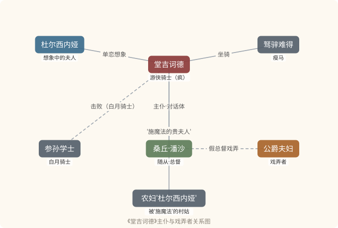

堂吉诃德
一、基本信息
| 作者 | 塞万提斯 |
|---|---|
| 成书/出版 | 第一部1605年，第二部1615年出版（Britannica） Don Quixote (novel by Cervantes) — Encyclopaedia Britannica（百科全书） |
| 国别/地区 | 西班牙 |
| 时代 | 古代 · 文艺复兴—17世纪 |
| 体裁 | 长篇小说（骑士小说戏仿/流浪汉体/现代小说先驱） |
| 语言 | 西班牙语（卡斯蒂利亚语） |

二、创作背景
16世纪末西班牙骑士小说泛滥成灾——塞万提斯在序言中宣称本书宗旨是'把骑士小说的那套东西彻底摧毁'（其意，原文待核）。讽刺的盔甲里装着一部关于理想主义的悲剧。
出版与伪续风波：第一部（1605）风行欧洲；1614年阿拉贡人阿维利亚内达（Avellaneda）出版伪续迫使塞万提斯加速完成并回应——他在第二部中让人物'读到并痛斥'伪续（Britannica：A spurious sequel by 'Alonso Fernández de Avellaneda' appeared in 1614, which Cervantes addressed in his own Part 2）。
经典化：1612年首个英译（Britannica：first English translation in 1612）；巴赫金以'众声喧哗'（heteroglossia）解释其'现代小说原型'地位（Britannica cites critic Mikhail Bakhtin's concept）。
三、内容脉络
第一部（1605，52章）：拉曼却的穷乡绅阿隆索·吉哈诺读骑士小说入迷，自名'堂吉诃德'，披曾祖旧甲、骑瘦马'驽骍难得'，把村姑想象为贵夫人杜尔西内娅，三次出门游侠——风车大战（'把风车当作巨人'，Britannica：mistakes windmills for giants）、客栈受封、释放苦役犯、被'魔法师'打得半死，被同乡参孙学士押送回家。
第二部（1615，66章）：堂吉诃德与桑丘再度出游——桑丘真被许诺的'海岛'兑现：他担任'巴拉塔里亚岛总督'，断案公正（Britannica：Sancho is made 'governor' of the supposed isle of Barataria and rules wisely before quitting）后辞职；公爵夫妇的戏弄、白月骑士（参孙假扮）击败堂吉诃德（Britannica：Defeated by the Knight of the White Moon）——他被迫发誓一年内不行侠。
结局：堂吉诃德回乡病倒，临终幡然醒悟骑士小说之害，以'阿隆索·吉哈诺善人'的名分死去——桑丘含泪劝主人再出门游侠，无人应答。
四、主要人物表
| 人物 | 身份 | 说明 |
|---|---|---|
| 堂吉诃德 | 拉曼却穷乡绅 | 理想主义的疯子：把书斋幻想活成现实——'世界文学中最眼熟的人物'之一（Britannica） |
| 桑丘·潘沙 | 农民随从 | 现实主义的化身：贪吃、怕死、俗语连珠，却在当'总督'时显出民间的智慧 |
| 杜尔西内娅·德尔·托波索 | 村姑·想象中的贵夫人 | 从未露面（第一部）的'心之公主'——想象力的最高产物 |
| 参孙·加尔拉斯果学士 | 同乡学士 | 先押送回家、后假扮'白月骑士'击败堂吉诃德——善意与残忍的暧昧 |
| 公爵夫妇 | 阿拉贡贵族 | 以捉弄穷骑士取乐的优雅恶——上流社会的残酷 |
| 驽骍难得（Rocinante） | 瘦马 | 仅次于主角的'角色'（通说） |
五、主题与艺术特点
- 理想与现实的永恒撕扯：'疯'的堂吉诃德比'醒'的众人更接近高贵——塞万提斯对理想主义的复杂致敬与哀悼。
- 叙事的自我意识：作者、译者、史家、人物互相闯入文本——小说从此有了'元小说'的基因（Britannica：heteroglossia；第二部人物读第一部）。
- 西班牙的黄昏：被骑士时代幻象困住的西班牙——帝国没落期的一曲挽歌（通说，历史解读）。
- 桑丘的'总督'：民间智慧对权力结构的反讽—— servant 当政反胜贵族（通说解读）。
- 艺术特点：双主人公对话体结构（理想/现实的永恒对话）、戏仿文体的多层嵌入、笑中带泪的悲剧性。
六、影响与评论
- Britannica（Don Quixote 条目）：'one of the most widely read classics of Western literature'（西方文学阅读最广的经典之一）与'现代小说原型'（巴赫金 heteroglossia 之证）。
Don Quixote (novel by Cervantes) — Encyclopaedia Britannica（百科全书） - Britannica（Cervantes 条目）：'often considered the first modern novel'（常被认为第一部现代小说）；全译或节译60余种语言。
Miguel de Cervantes — Encyclopaedia Britannica（百科全书） - Britannica：改编传统——1869年芭蕾、音乐剧《拉曼却的人》（1965/1968）、1972年电影（Peter O'Toole）、Gilliam《谁杀了堂吉诃德》（2018）（Britannica 列举）。
Don Quixote (novel by Cervantes) — Encyclopaedia Britannica（百科全书） - 哲学回响：从陀思妥耶夫斯基（《卡拉马佐夫兄弟》引述）到福楼拜、马克思对堂吉诃德的引用——'世界文学的镜子'（本条为通说，具体引文待核）。
Don Quixote (novel by Cervantes) — Encyclopaedia Britannica（百科全书）
七、阅读建议
- 两部134章体量大；第一部穿插中篇小说（'何必追根究底''翟任斯'等插章）打断主线——初读可跳。
- 骑士小说戏仿的典故（阿马迪斯等）需要注释。
- 第二部与第一部互文（读伪续、回忆），建议顺序完整阅读而非抽读。
- 杨绛译《堂吉诃德》（人民文学出版社）：通行经典译本（从英文转译的特色版本）。
- 董燕生译本（浙江文艺/长江文艺）：西班牙语直译全本。
- 屠孟超译本（译林出版社）：另一全译选择。
第一部精读前10章与风车大战（第8章）、桑丘当'总督'（第二部第42—53章）→ 通读第一部 → 通读第二部 → 细读结尾（'善人阿隆索·吉哈诺之死'）。
八、待核实
- 第一部初版（1605年马德里 Juan de la Cuesta 印书馆）与印数细节待核。
- 杨绛译本的转译底本（英文版）信息待核。
- 阿维利亚内达伪续的作者身份争议待核。
- '摧毁骑士小说'宣言的原文（第一部序言）逐字核对待完成。
本页主要来源
- Don Quixote (novel by Cervantes) — Encyclopaedia Britannica（百科全书）
- Miguel de Cervantes — Encyclopaedia Britannica（百科全书）
塞万提斯的其他收录作品：堂吉诃德